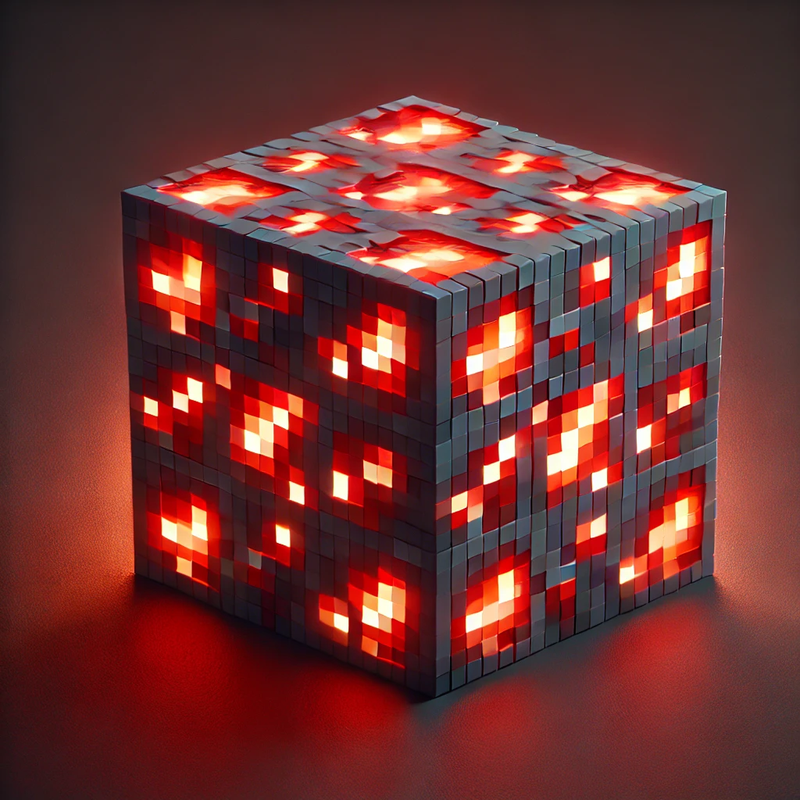
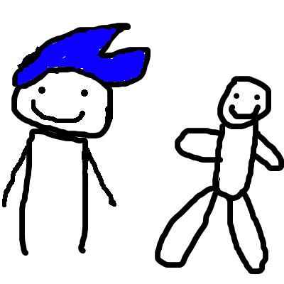
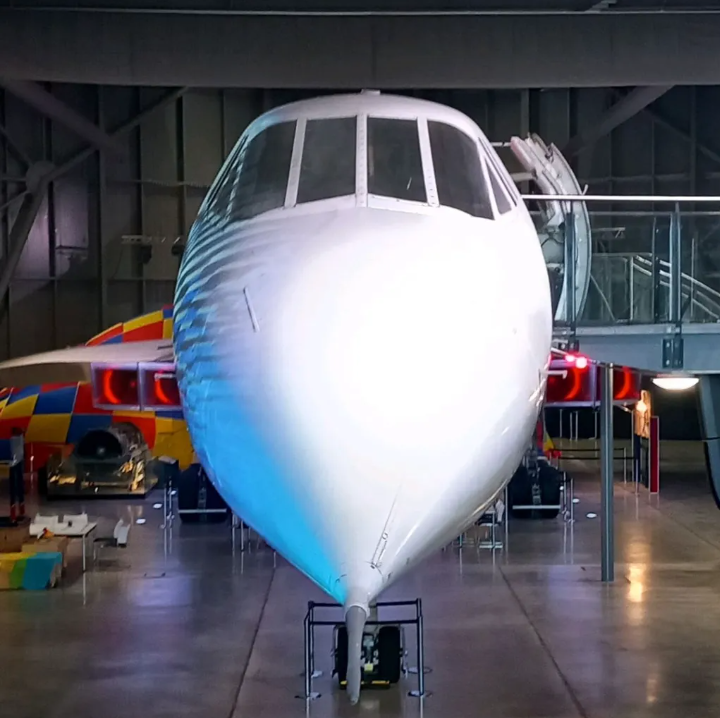

Для любых задач
Подходит для повседневной работы, разработки, мультимедиа и обучения.
Современный дистрибутив Linux, ориентированный на простоту, производительность и гибкость. Создан для разработчиков, авторов контента и обычных пользователей.
Подходит для самых разных сценариев использования: разработки программного обеспечения, создания контента, обучения или повседневной работы в интернете.
Чистая и интуитивно понятная среда, которая кажется знакомой с первого запуска и при этом легко настраивается.
MuliOS развивается благодаря отзывам сообщества, вкладу участников с открытым исходным кодом и постоянным улучшениям.
Подходит для повседневной работы, разработки, мультимедиа и обучения.
Доступ к широкому выбору Linux-приложений и инструментов для работы, творчества и повседневных задач.
Создан с использованием современных практик безопасности Linux.
Легко адаптируется под различные рабочие процессы и сценарии использования.
Мы всегда рады вашим идеям, предложениям, отзывам и вкладу в развитие проекта.
Проект разрабатывается открыто, поощряя сотрудничество, прозрачность и участие сообщества.
MuliOS продолжает активно развиваться. Если вы разработчик, дизайнер, тестировщик или просто энтузиаст Linux — ваше мнение и участие очень важны.
Project Lead; Developer
Lead Developer; Web and Software Developer; Translation
Developer; Apps Manager; Translation

04Lead Developer; Developer

05Developer; Apps Manager
Animations

07Manager